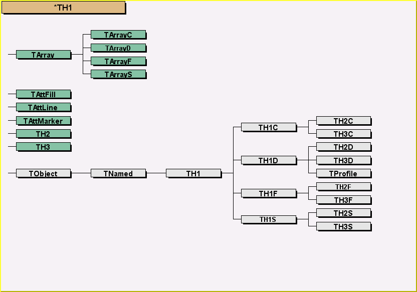
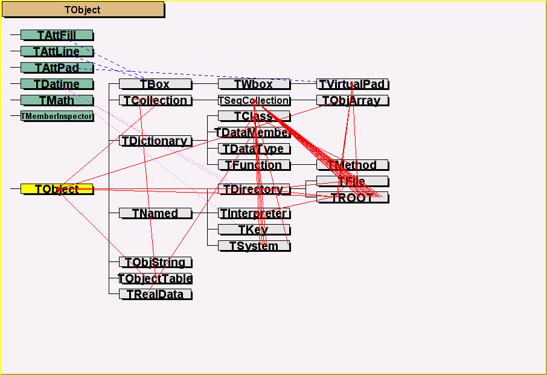

class TClassTree: public TNamed
Draw inheritance tree and their relations for a list of classes The following options are supported - Direct inheritance (default) - Multiple inheritance - Composition - References by data members and member functions - References from Code The list of classes is specified: - either in the TClassTree constructor as a second argument - or the parameter to TClassTRee::Draw Note that the ClassTree viewer can also be started from the canvas pull down menu "Classes". In the list of classes, class names are separated by a ":" wildcarding is supported. The following formats are supported, eg in TClassTree::Draw 1- Draw("ClassA") Draw inheritance tree for ClassA Show all classes referenced by ClassA 2- Draw("*ClassB") Draw inheritance tree for ClassB and all the classes deriving from ClassB 3- Draw(">ClassC") Draw inheritance tree for ClassC Show classes referencing ClassC 4- Draw("ClassD<") Draw inheritance tree for ClassD Show classes referenced by ClassD Show all classes referencing ClassD 5- Draw("Cla*") Draw inheritance tree for all classes with name starting with "Cla" Show classes referenced by these classes 6- Draw("ClassA:ClassB<") Draw inheritance tree for ClassA Show all classes referenced by ClassA Draw inheritance tree for ClassB Show classes referenced by ClassB Show all classes referencing ClassB example; Draw("TTree<") Draw inheritance tree for the Root class TTree Show all classes referenced by TTree Show all classes using TTree By default, only direct inheritance is drawn. Use TClassTree::ShowLinks(option) to show additional references option = "H" to show links to embedded classes option = "M" to show multiple inheritance option = "R" to show pointers to other classes from data members option = "C" to show classes used by the code(implementation) of a class The following picture is produced directly by: TClassTree ct("ct","*TH1") It shows all the classes derived from the base class TH1./*  */
The ClassTree class uses the services of the class TPaveClass to show the class names. By clicking with the right mouse button in one TPaveClass object, one can invoke the following functions of TClassTree: - ShowLinks(option) with by default option = "HMR" - Draw(classes). By default the class drawn is the one being pointed - ShowClassesUsedBy(classes) (by default the pointed class) - ShowClassesUsing(classes) (by default the pointed class) The following picture has been generated with the following statements TClassTree tc1("tc1","TObject"); tc1.SetShowLinks("HMR");/*  */
Note that in case of embedded classes or pointers to classes, the corresponding dashed lines or arrows respectively start in the TPaveClass object at an X position reflecting the position in the list of data members. - References by data members to other classes are show with a full red line - Multiple inheritance is shown with a dashed blue line - "Has a" relation is shown with a dotted cyan line - References from code is shown by a full green line Use TClassTree::SetSourceDir to specify the search path for source files. By default the search path includes the ROOTSYS/src directory, the current directory and the subdirectory src. The first time TClassTree::Draw is invoked, all the classes in the current application are processed, including the parsing of the code to find all classes referenced by the include statements. This process may take a few seconds. The following commands will be much faster. A TClassTree object may be saved in a Root file. This object can be processed later by a Root program that ignores the original classes. This interesting possibility allows to send the class structure of an application to a colleague who does not have your classes. Example: TFile f("myClasses.root","recreate") TClassTree *ct = new TClassTree("ct","ATLF*") ct->Write(); You can send at this point the file myClass.root to a colleague who can run the following Root basic session TFile f("myClass.root"); //connect the file tt.ls(); //to list all classes and titles tt.Draw("ATLFDisplay") //show class ATLFDisplay with all its dependencies At this point, one has still access to all the classes present in the original session and select any combination of these classes to be displayed.
Function Members (Methods)
public:
| TClassTree() | |
| TClassTree(const TClassTree&) | |
| TClassTree(const char* name, const char* classes = "") | |
| virtual | ~TClassTree() |
| void | TObject::AbstractMethod(const char* method) const |
| virtual void | TObject::AppendPad(Option_t* option = "") |
| virtual void | TObject::Browse(TBrowser* b) |
| static TClass* | Class() |
| virtual const char* | TObject::ClassName() const |
| virtual void | TNamed::Clear(Option_t* option = "") |
| virtual TObject* | TNamed::Clone(const char* newname = "") const |
| virtual Int_t | TNamed::Compare(const TObject* obj) const |
| virtual void | TNamed::Copy(TObject& named) const |
| virtual void | TObject::Delete(Option_t* option = "")MENU |
| virtual Int_t | TObject::DistancetoPrimitive(Int_t px, Int_t py) |
| virtual void | Draw(const char* classes = "") |
| virtual void | TObject::DrawClass() constMENU |
| virtual TObject* | TObject::DrawClone(Option_t* option = "") constMENU |
| virtual void | TObject::Dump() constMENU |
| virtual void | TObject::Error(const char* method, const char* msgfmt) const |
| virtual void | TObject::Execute(const char* method, const char* params, Int_t* error = 0) |
| virtual void | TObject::Execute(TMethod* method, TObjArray* params, Int_t* error = 0) |
| virtual void | TObject::ExecuteEvent(Int_t event, Int_t px, Int_t py) |
| virtual void | TObject::Fatal(const char* method, const char* msgfmt) const |
| virtual void | TNamed::FillBuffer(char*& buffer) |
| virtual Int_t | FindClass(const char* classname) |
| virtual TObject* | TObject::FindObject(const char* name) const |
| virtual TObject* | TObject::FindObject(const TObject* obj) const |
| const char* | GetClasses() const |
| virtual Option_t* | TObject::GetDrawOption() const |
| static Long_t | TObject::GetDtorOnly() |
| virtual const char* | TObject::GetIconName() const |
| virtual const char* | TNamed::GetName() const |
| virtual char* | TObject::GetObjectInfo(Int_t px, Int_t py) const |
| static Bool_t | TObject::GetObjectStat() |
| virtual Option_t* | TObject::GetOption() const |
| virtual const char* | GetSourceDir() const |
| virtual const char* | TNamed::GetTitle() const |
| virtual UInt_t | TObject::GetUniqueID() const |
| virtual Bool_t | TObject::HandleTimer(TTimer* timer) |
| virtual ULong_t | TNamed::Hash() const |
| virtual void | TObject::Info(const char* method, const char* msgfmt) const |
| virtual Bool_t | TObject::InheritsFrom(const char* classname) const |
| virtual Bool_t | TObject::InheritsFrom(const TClass* cl) const |
| virtual void | TObject::Inspect() constMENU |
| void | TObject::InvertBit(UInt_t f) |
| virtual TClass* | IsA() const |
| virtual Bool_t | TObject::IsEqual(const TObject* obj) const |
| virtual Bool_t | TObject::IsFolder() const |
| Bool_t | TObject::IsOnHeap() const |
| virtual Bool_t | TNamed::IsSortable() const |
| Bool_t | TObject::IsZombie() const |
| virtual void | ls(Option_t* option = "") const |
| void | TObject::MayNotUse(const char* method) const |
| virtual Bool_t | TObject::Notify() |
| void | TObject::Obsolete(const char* method, const char* asOfVers, const char* removedFromVers) const |
| static void | TObject::operator delete(void* ptr) |
| static void | TObject::operator delete(void* ptr, void* vp) |
| static void | TObject::operator delete[](void* ptr) |
| static void | TObject::operator delete[](void* ptr, void* vp) |
| void* | TObject::operator new(size_t sz) |
| void* | TObject::operator new(size_t sz, void* vp) |
| void* | TObject::operator new[](size_t sz) |
| void* | TObject::operator new[](size_t sz, void* vp) |
| TClassTree& | operator=(const TClassTree&) |
| virtual void | Paint(Option_t* option = "") |
| virtual void | TObject::Pop() |
| virtual void | TNamed::Print(Option_t* option = "") const |
| virtual Int_t | TObject::Read(const char* name) |
| virtual void | TObject::RecursiveRemove(TObject* obj) |
| void | TObject::ResetBit(UInt_t f) |
| virtual void | SaveAs(const char* filename = "", Option_t* option = "") const |
| virtual void | TObject::SavePrimitive(ostream& out, Option_t* option = "") |
| void | TObject::SetBit(UInt_t f) |
| void | TObject::SetBit(UInt_t f, Bool_t set) |
| virtual void | SetClasses(const char* classes, Option_t* option = "ID") |
| virtual void | TObject::SetDrawOption(Option_t* option = "")MENU |
| static void | TObject::SetDtorOnly(void* obj) |
| virtual void | SetLabelDx(Float_t labeldx = 0.15) |
| virtual void | TNamed::SetName(const char* name)MENU |
| virtual void | TNamed::SetNameTitle(const char* name, const char* title) |
| static void | TObject::SetObjectStat(Bool_t stat) |
| virtual void | SetSourceDir(const char* dir = "src") |
| virtual void | TNamed::SetTitle(const char* title = "")MENU |
| virtual void | TObject::SetUniqueID(UInt_t uid) |
| virtual void | SetYoffset(Float_t offset = 0) |
| virtual void | ShowClassesUsedBy(const char* classes) |
| virtual void | ShowClassesUsing(const char* classes) |
| virtual void | ShowLinks(Option_t* option = "HMR") |
| virtual void | ShowMembers(TMemberInspector& insp) |
| virtual Int_t | TNamed::Sizeof() const |
| virtual void | Streamer(TBuffer& b) |
| void | StreamerNVirtual(TBuffer& b) |
| virtual void | TObject::SysError(const char* method, const char* msgfmt) const |
| Bool_t | TObject::TestBit(UInt_t f) const |
| Int_t | TObject::TestBits(UInt_t f) const |
| virtual void | TObject::UseCurrentStyle() |
| virtual void | TObject::Warning(const char* method, const char* msgfmt) const |
| virtual Int_t | TObject::Write(const char* name = 0, Int_t option = 0, Int_t bufsize = 0) |
| virtual Int_t | TObject::Write(const char* name = 0, Int_t option = 0, Int_t bufsize = 0) const |
protected:
| virtual void | TObject::DoError(int level, const char* location, const char* fmt, va_list va) const |
| virtual void | FindClassesUsedBy(Int_t iclass) |
| virtual void | FindClassesUsing(Int_t iclass) |
| virtual void | FindClassPosition(const char* classname, Float_t& x, Float_t& y) |
| virtual void | Init() |
| void | TObject::MakeZombie() |
| TObjString* | Mark(const char* classname, TList* los, Int_t abit) |
| virtual void | PaintClass(Int_t iclass, Float_t xleft, Float_t y) |
| virtual void | ScanClasses(Int_t iclass) |
| virtual void | ShowCod() |
| virtual void | ShowHas() |
| virtual void | ShowMul() |
| virtual void | ShowRef() |
Data Members
public:
| enum TObject::EStatusBits { | kCanDelete | |
| kMustCleanup | ||
| kObjInCanvas | ||
| kIsReferenced | ||
| kHasUUID | ||
| kCannotPick | ||
| kNoContextMenu | ||
| kInvalidObject | ||
| }; | ||
| enum TObject::[unnamed] { | kIsOnHeap | |
| kNotDeleted | ||
| kZombie | ||
| kBitMask | ||
| kSingleKey | ||
| kOverwrite | ||
| kWriteDelete | ||
| }; |
protected:
| TString | fClasses | List of classes to be drawn |
| TString** | fCnames | ![fNclasses] class names |
| Int_t* | fCparent | !parent number of classes (temporary) |
| TClass** | fCpointer | ![fNclasses] pointers to the TClass objects |
| Int_t* | fCstatus | [fNclasses] classes status |
| TString** | fCtitles | ![fNclasses] class titles |
| char** | fDerived | ![fNclasses] table to indicate if i derives from j |
| Float_t | fLabelDx | width along x of TPaveLabels in per cent of pad |
| TList** | fLinks | ![fNclasses] for each class, the list of referenced(ing) classes |
| TString | TNamed::fName | object identifier |
| Int_t | fNclasses | current number of classes |
| Int_t* | fNdata | [fNclasses] Number of data members per class |
| TString** | fOptions | ![fNclasses] List of options per class |
| Int_t* | fParents | [fNclasses] parent number of classes (permanent) |
| Int_t | fShowCod | if 1 show classes referenced by implementation |
| Int_t | fShowHas | if 1 show "has a" relationship |
| Int_t | fShowMul | if 1 show multiple inheritance |
| Int_t | fShowRef | if 1 show classes relationship other than inheritance |
| TString | fSourceDir | Concatenated source directories |
| TString | TNamed::fTitle | object title |
| Float_t | fYoffset | offset at top of picture in per cent of pad |
Class Charts
{kind=link}
{kind=link}
{kind=link}
{kind=link}
Function documentation
void Draw(const char* classes = "")
Draw the inheritance tree and relations for the list of classes see this class header for the syntax and examples
Int_t FindClass(const char* classname)
Find class number corresponding to classname in list of local classes
void FindClassPosition(const char* classname, Float_t& x, Float_t& y)
Search the TPaveClass object in the pad with label=classname returns the x and y position of the center of the pave.
TObjString * Mark(const char* classname, TList* los, Int_t abit)
set bit abit in class classname in list los
void SaveAs(const char* filename = "", Option_t* option = "") const
save current configuration in a Root file
if filename is blank, the name of the file will be the current objectname.root
all the current settings are preserved
the Root file produced can be looked at by a another Root session
with no access to the original classes.
By default a message is printed. Specify option "Q" to remove the message
void ScanClasses(Int_t iclass)
Select all classes used by/referenced/referencing the class number iclass and build the list of these classes
void SetClasses(const char* classes, Option_t* option = "ID")
Set the list of classes for which the hierarchy is to be drawn See Paint for the syntax
void SetLabelDx(Float_t labeldx = 0.15)
Set the size along x of the TPavellabel showing the class name
void SetYoffset(Float_t offset = 0)
Set the offset at the top of the picture The default offset is computed automatically taking into account classes not inheriting from TObject.
void ShowClassesUsing(const char* classes)
mark classes using any class in the list of classes in classes
void ShowLinks(Option_t* option = "HMR")
Set link options in the ClassTree object "C" show References from code "H" show Has a relations "M" show Multiple Inheritance "R" show References from data members
void Streamer(TBuffer& b)
Stream an object of class TClassTree. the status of the object is saved and can be replayed in a subsequent session